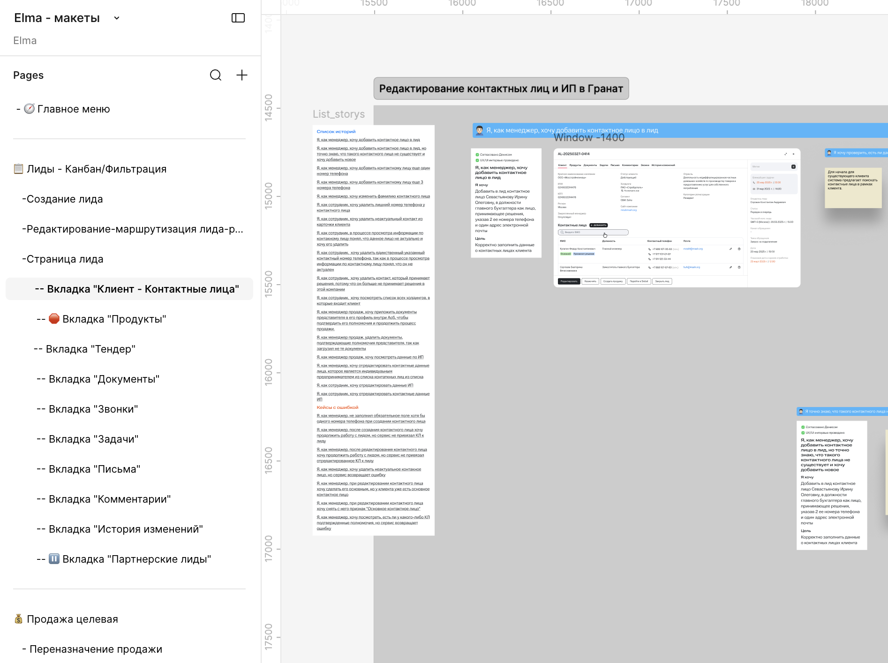
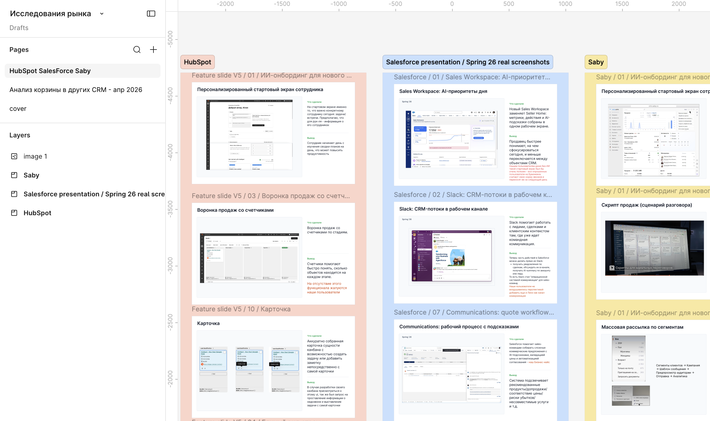

Дизайн как система
Помимо проектирования интерфейсов, я выстраиваю процессы, которые помогают команде работать быстрее, сохранять единые стандарты и масштабировать продукт без потери качества.
Моя роль
Моя роль заключается в систематизации дизайн-процессов: собираю повторяющиеся паттерны, формализую правила работы с макетами и помогаю команде быстрее готовить материалы без потери качества и консистентности.
Защита развития продукта
Совместно с CPO готовила материалы для продуктового комитета: структурировала аргументацию, визуализировала данные и оформляла презентации для защиты развития продукта.
В результате команда выросла с 30 до 50+ человек и получила финансирование на следующий этап развития.
Автоматизация отчётности
Перестроила процесс подготовки презентаций к Sprint Review и отчётности для стейкхолдеров.
Сначала стандартизировала шаблоны, структуру данных и выгрузки из Jira. Позже передала процесс младшему дизайнеру и курировала разработку плагинов для автоматизации подготовки презентаций.
В результате регулярная отчётность перестала зависеть от ручной сборки материалов и сократилась с нескольких часов до одного часа.
AI-автоматизация
Для регулярной отчётности и презентаций команды настроила AI-процесс, который автоматически приводит черновые материалы к единому шаблону и требованиям дизайн-системы. Это позволило сократить время подготовки типовых презентаций и повысить визуальную консистентность материалов.
Организация дизайн-пространства
Создала структуру дизайн-пространства для большой CRM-системы: навигацию, оглавление, правила организации пользовательских историй и рабочие гайды для команды.
Написала плагин для создания оглавления секции, что позволяет пользователю (в нашем случае аналитикоам и разработчикам), проще навигировать по проекту.
Сегодня единая структура помогает быстрее находить нужные сценарии и поддерживать консистентность решений.

Миграция дизайн-системы
Участвую в постепенном переходе продукта с low-code-платформы на собственные веб-компоненты без остановки разработки.
Параллельно координирую обновление макетов, поддержку существующих сценариев и адаптацию новых решений под меняющуюся архитектуру продукта.
Технологический радар продукта
Регулярно исследую развитие российских и зарубежных CRM-систем, включая Salesforce, HubSpot, BPMSoft, Saby и Bitrix.
Сравниваю новые подходы, паттерны проектирования и возможности продуктов, выделяю практики, которые могут быть полезны для развития нашей системы.
Результаты исследования систематизируются и презентуются продуктовым лидам. На основе обзора рынка формируются направления дальнейшего развития и технологической зрелости продукта.

Предотвращение технического долга
Во время приёмки функциональности обнаружила, что команды начинают создавать собственные реализации одинаковых React-компонентов вместо переиспользования уже существующих. В итоге неправильно реализованные решения (в нашем случае форма календаря, котора ядолжна переиспользоваться по всему интерфейсу, и форма заполнения контактных данных), реализованы в двух разных местах, иногда разным кодом.
Проблема была замечена на раннем этапе миграции, когда её ещё можно решить организационно, а не через дорогостоящий рефакторинг.
Сейчас запускаю процесс формирования единого подхода к хранению и переиспользованию компонентов, чтобы избежать накопления технического долга по мере роста системы.
Интерфейсы и данные реконструированы для портфолио. Названия отдельных сущностей и детали реализации изменены для соблюдения конфиденциальности.